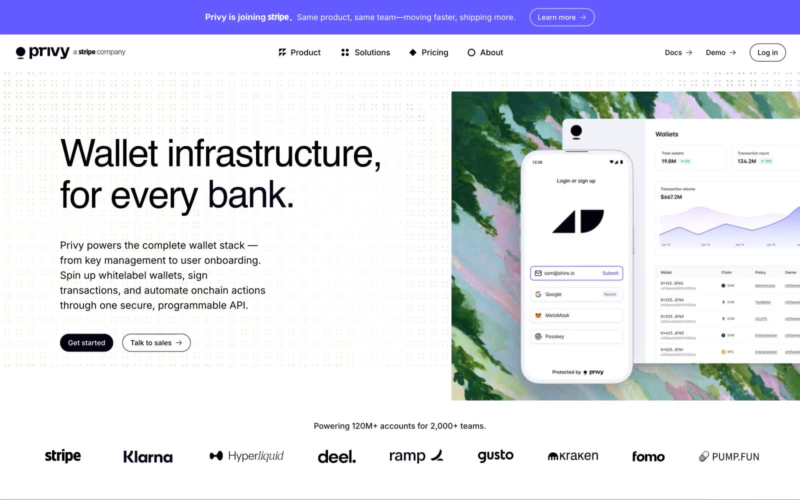

Privy 的 Design.md 主题展示，围绕Web3、金融科技、浅色界面、AI组织页面。
Explore Privy's light Fintech design system: Canvas White #ffffff, Ink Black #000000 colors, sans-serif, Inter typography, and DESIGN.md for AI agents.

#111117: #111117#000000: #000000#ffffff: #ffffff#22222a: #22222a#072723: #072723#635bff: #635bff#010110: #010110#73737c: #73737c#cbcde1: #cbcde1#808080: #808080#333333: #333333#6cedaf: #6cedafdisplay: Interbody: Intermono: ui-monospacehints: Inter,ui-monospace